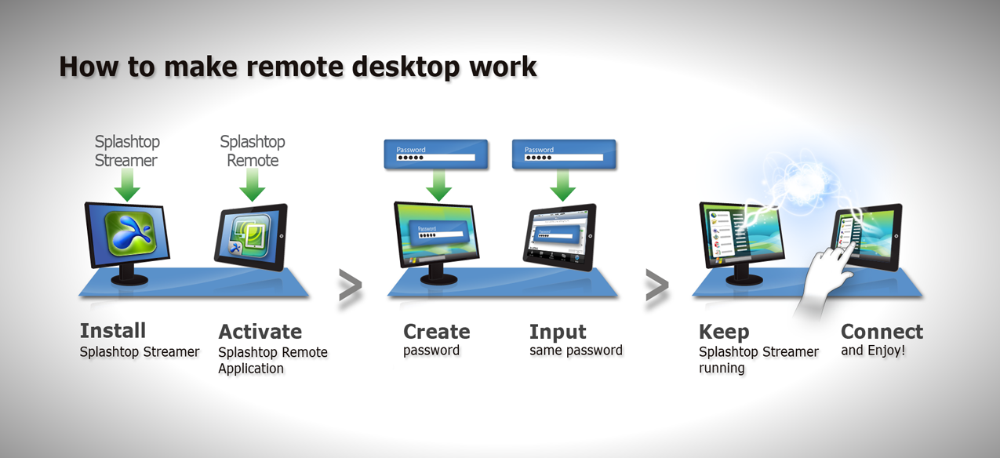

1. Visit www.SplashtopRemote.com from a computer you want to access, and download and install Splashtop Remote Streamer application on that computer.
2. All computers available on you local network are automatically displayed above (may take up to 1 minute). You can also manually add another computer by pressing the menu button.
